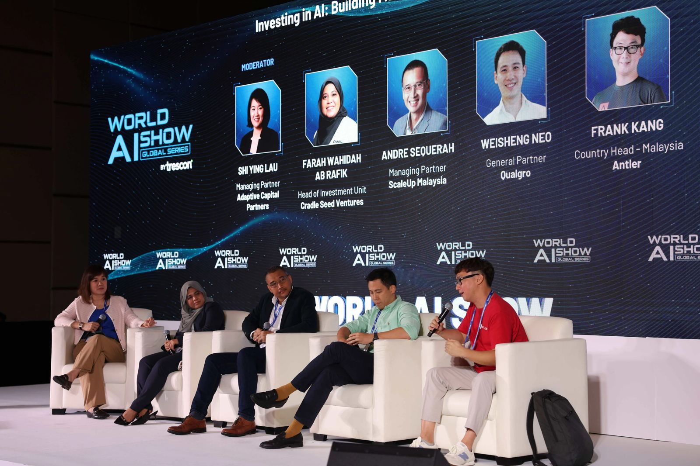

Conferences · AI
World AI Show Indonesia 2027
- Dates
- –
- Location
- Jakarta, Indonesia
- Format
- In-person
- Category
- AI
- Industry
- Artificial intelligence
- Organiser
- Trescon
- Expected attendance
- 1,000
- Official website
- https://worldaishow.com/indonesia/
About
Dates are local Indonesia dates (Jakarta/Yogyakarta WIB UTC+7; Bali WITA UTC+8).
Topics: enterprise AI, AI governance, data & LLMOps, public-sector AI.
Official: "convenes 1,000+ verified enterprise decision-makers" (organiser expectation).
Sources
- Official — https://worldaishow.com/indonesia/